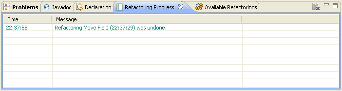

Undoing RefactoringsUndoing Refactorings
Undoing RefactoringsUndoing Refactorings
When using the Dynamic Refactoring Plugin to run refactorings on your code you will be able to
undo all the applied refactorings up to any given point in the process.
Remember, however, that once
you run a refactoring on a second Java project in Eclipse, you will lose the possibility to undo
refactorings run on a different one, and once you tell the plugin to undo a given set of refactorings,
you won't be able go back forward, but you will have to rerun them again one by one.
There are two ways to undo a refactoring, although the effects of using one or other method are not the same.
The recommended way of undoing refactorings is by using the plugin History View.
Every time a refactoring is successfully run, it will show up in this view, identified by its termination time and its name. If you want to go back to the state your project had just before running any of the refactorings that appear within the view, push the undo button next to the oldest refactoring you want to be undone.
Once you push the button, a progress dialog will show up, which will keep you informed about the progress of the undo-operation.
When all the refactorings between the one that was run the last and the one you selected are completely undone, you will see that your project has gone back to its original state before that first refactoring. Both the History View and the Progress View will be updated to reflect the changes.

Inside Eclipse clic on the Package Explorer view and select the menu item Edit > Undo.... This will undo a single refactoring, and only the last one will be available each time. If you would like to undo more than one refactoring, you would have to do it one by one.